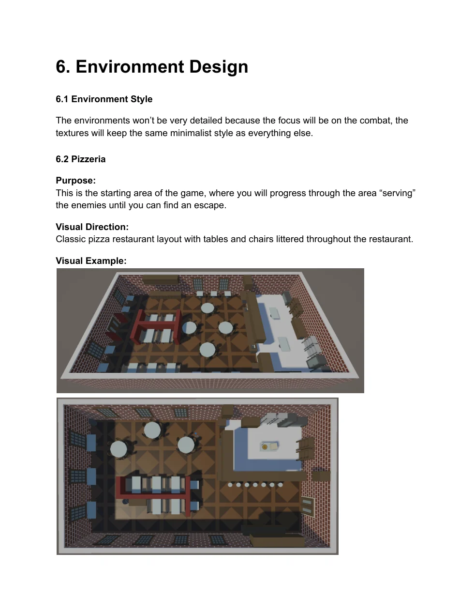
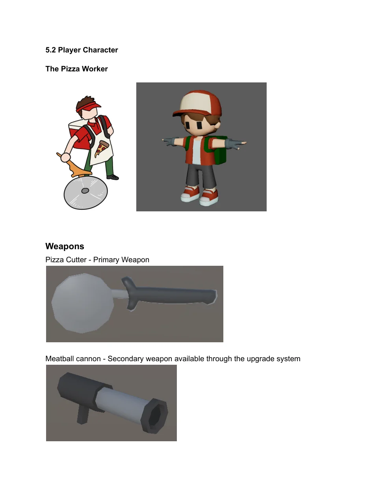
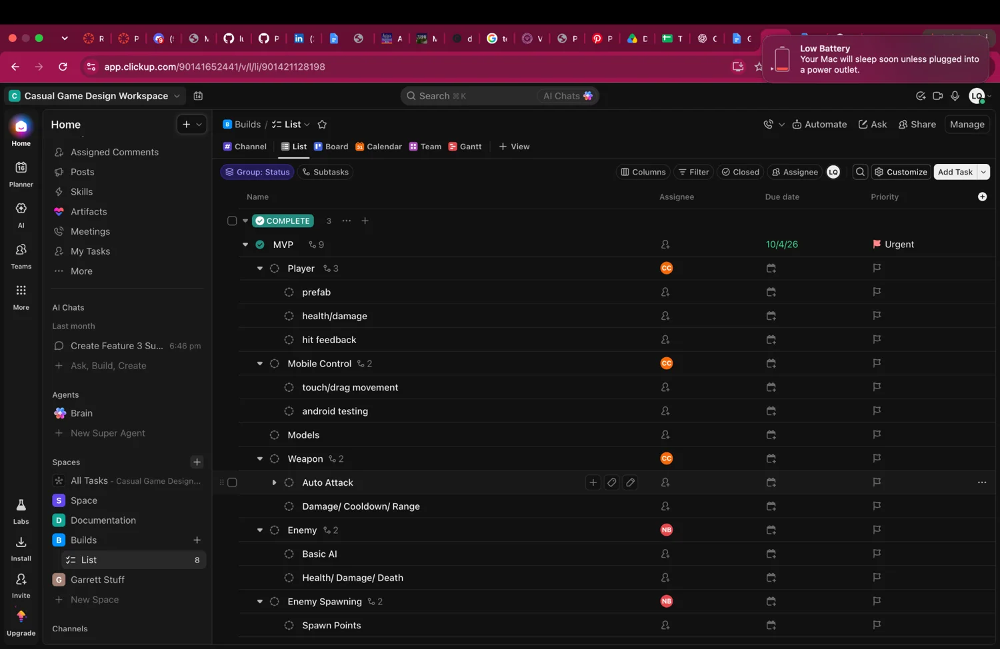
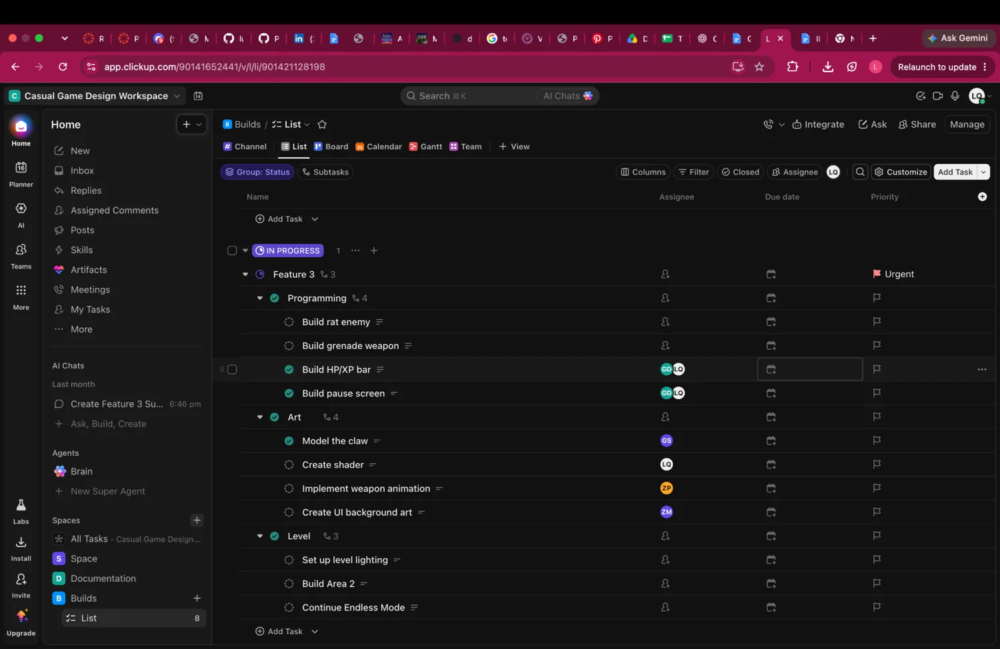
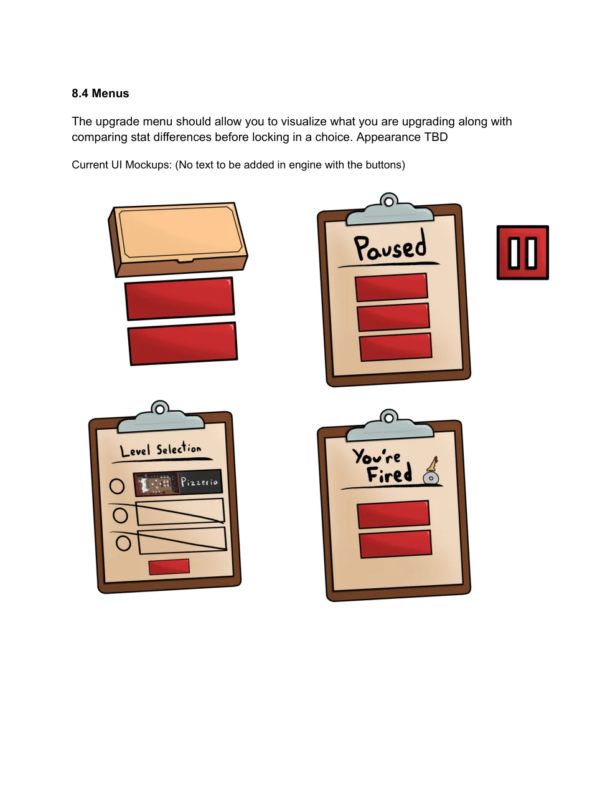

Academic game production · Work in progress
Pizza Cutter In progress
A seven-person Unity mobile game about surviving a chaotic pizza-restaurant shift. I primarily handled production organization and UI implementation, keeping tasks organized while integrating player-facing interfaces into the game.
- Project
- Pizza Cutter (named Pizza Slicer in the current team design documents)
- Role
- Producer · Unity UI implementation
- Team
- 7-person academic team
- Engine
- Unity · Android mobile target
- Workflow
- ClickUp, GitHub, Maya, Blender, Substance Painter / Designer
- Timeline
- August 2026 – present (WIP)
The game and design goals
Pizza Cutter is a portrait-oriented, top-down casual action game in which a pizza worker battles increasingly demanding customers using food-themed weapons. Its core loop is move, fight, survive, collect XP, and choose upgrades. The team’s design documents emphasize touch-friendly controls, readable combat feedback, and a bright low-poly aesthetic.
The GDD and TDD describe the intended design and planned features, not a guarantee that every weapon, area, or system is finished.


What I actually worked on
- Production organization: Organized tasks and followed feature progress in ClickUp, with work grouped by programming, art, and level development.
- Milestone visibility: Used an MVP section and later feature breakdowns to help track what the team was building next.
- UI implementation: Integrated player-facing UI into Unity, focusing on the HUD and menu interactions rather than claiming ownership of every visual mockup.
- Team coordination: Followed up with contributors and kept priorities and tasks visible across the seven-person team.
Production evidence: ClickUp board
These screenshots show the team's task hierarchy, with an MVP section and a later in-progress feature grouping. Tasks were divided into programming, art, and level needs so each area could be followed separately.


These are snapshots of the team workspace. A completed parent group does not necessarily mean every visible subtask is complete.
UI implementation and iteration
The UI needs to remain readable on a small, portrait-oriented screen while presenting health, XP, stage progress, upgrades, and menus. I worked on implementing interface behavior and organizing Unity UI elements so players can navigate the game without the interface overwhelming gameplay.

Separating the menus and HUD into manageable UI pieces has been an important part of supporting responsive layouts and easier iteration as the game changes.
What I am learning
Working across production and UI implementation has shown me how closely interface work depends on the game systems around it. Clear ownership and structured ClickUp tasks make it easier to coordinate those dependencies, while testing the UI in context helps identify layout and interaction issues before later builds.
Current status and next evidence
The game is in active production. The screenshots document team planning and interface direction; final gameplay, device testing results, and release outcomes will be added when verified.